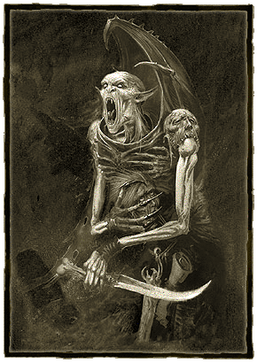
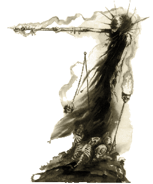

| |
A
Necrarch
Vérvonal
A Necrarch vámpírok
ismertetõje
A
Necrarch-ok a legritkább és a legembertelenebb
fajtája az ismert vámpíroknak. A legendák szerint
Wsoran-tól, Rasetra hercegétõl, származtatható
vérvonaluk. Ugyan eme legendás õsatya már hosszú
ideje az enyészet martalékává vált Lahmia kõbevájt
kazamatáiban, Wsoran visszataszító öröksége
továbbél gyermekeiben.
|
A
Necrarch-okat minden épeszû ember, sõt még saját
élõhalott testvéreik is elkerülik. Szokásaik a
legtöbbek számára érthetetlennek, már-már õrültnek
tûnnek. Õrületük azonban elhalványul rendkívüli
tudásuk mellett a tiltott tudományokban, mely
leginkább alkímiában és természetesen
nekromanciában mutatkozik meg.
Az
ismert vámpírfajták közül a Necrarch-ok a
legkevésbé emberiek. Amíg a legtöbb vámpír
ravaszsággal, vagy erõvel az emberek feletti
uralomra igyekszik szert tenni, a Necrarch-ok nem
akarnak mást, mint véget vetni mindenek, ami élõ.
A
Necrarch-ok a legritkábbak a nagyobb
vámpír-családok között. Mindemellett, több
tulajdonságuk is nagyban eltér élõhalott
testvéreikétõl, melyek közül kétségtelenül
megjelenésük a legszembeötlõbb. A Necrarch-
ok
bûzlõ,
rothadó
rettenetek,
kiknek |
 |
|
|
emberfelettien
gonosz
tekintetét
nagyon
kevés halandó képes
megállni remegés nélkül. Meglátni egy Necrarch
vámpírt legalább annyira megrázó, mint amennyire
megigézõ Lahmiai testvéreiket. A többi eltérés
ugyan nem oly szembetûnõ, mint küllemük ám annál
fontosabbak. Minden vámpírok közül, a Necrarch-ok
az egyetlenek, akiknek nincs szükségük vérre a
túléléshez. Hogy hogyan képesek elkerülni a vámpír
faj kétségtelenül legnagyobb átkát az mindmáig
ismeretlen. Ám amíg a többi vámpír kénytelen
emberekre vadászni nap mint nap, kockáztatva a
felfedezés veszélyét, addig a Necrarch-ok az
emberiségtõl távol, elrejtõzve mélyedhetnek bele
sötét tudományaikba. |
Mindennek
tetejében, egy Necrarch nem is úgy szemléli a
világot, mint a többi vámpír. Számukra az élõk
birodalma nem több mint ködös képzelgés. A
másvilág ugyanakkor - sírjaik masszív tömege és a
kriptákban lakozó megszámlálhatatlan rém -
kristálytisztán tárul eléjük és sokkal
valóságosabb, mint az élettel teli halandó világ.
Éppen ezért a Necrarch-ok elzárkózva élnek távol
az emberiségtõl, ahol szabadon mélyedhetnek el
kétes praktikáikban. A sötét varázslatok
tudományában nincs párjuk a többi vérszívó közt;
olyannyira, hogy még a leghatalmasabb vámpír
fejedelmek is óvatossá válnak egy Necrach
közelében.
A
Necrarch-ok magányos tornyokban és odúkban húzzák
meg magukat, messze minden emberi településtõl.
Erõteljes varázslatoktól és élõholtak légióitól
oltalmazva, ezen õsi vámpírok a sötét tudományok
gyakorlásának szentelik örökké tartó életüket.
Ennek következtében, magányának és
elszigeteltségének megóvása elsõdleges egy
Necrarch vámpír számára. A legtöbb
boszorkányvadász, ennek ellenére, mégis
megszállottan kutat búvóhelyeik után; melyek
megtalálását szinte mindig kegyetlen öldöklés
követi. A csata végével azonban ezen szerencsétlen
boszorkányvadászok szinte mindig a vámpír
élõhalott seregében végzik, örök életen át
szolgálva esküdt ellenségüket.
Mindazonáltal,
még a Necrach-ok sem képesek teljesen elszigetelve
élni, hiszen gyakran elengedhetetlen néhány élõ
áldozat, vagy egyéb „alapanyag” mágikus
kísérleteikhez. Ennek következtében szûkségük van
ügynökökre az emberek társadalmában. Mivel a testi
szépség számukra teljesen értéktelen, a
Necrarch-ok gyakran fogadják el azok szolgálatait,
akiket az emberi közösség kitaszított vagy megvet:
fertõzöttekét, õrültekét, eltorzultakét és
mutánsokét. Valamilyen oknál fogva a Necrach-ok
szánalmat éreznek ezen kitagadott szerencsétlenek
iránt. Ügynökeik cserébe rendíthetetlen hûségrõl
tesznek tanúbizonyságot, és olyan feladatokat
hajtanak végre, amely a vámpír számára nehéz vagy
egyenesen lehetetlen lenne. Ezen söpredék, a nap
fénye alatt, sírokat rabol ki és dögvermekben
kutat alapanyagok után gazdájuk sötét
kísérleteihez. A legintelligensebbeket a
Necrarch-ok beavatják a nekromancia rejtelmeibe
is. A legritkább esetben azonban, egy rendkívüli
tehetséggel megáldott szolga megtapasztalhatja a
legnagyobb kegyet, melyet egy vámpír halandónak
adhat: az örök életet, a beavatást a Necrarch
vámpírok közé.
|
 |
Mint minden vámpír,
a Necrarch-ok vérvonala is az õsi Lahmiába
vezet vissza, ahol õseik örökkön élõ
fejedelmekként uralkodtak az élõkõn. A
Necrarch- ok Wsoran-tól, hitük szerint minden
vámpírok õsatyjától származnak. Minden
valószínûség szerint, Wsoran egy alkimista
és akadémikus volt a rég elfeledett
Nehekhara-i idõkben, aki társaihoz hasonlóan
az örök élet elixírén dolgozott. Ám biztosat
senki nem tud, hiszen a vámpírok történelme
mindmáig a sötétség homályába vész, és a
Necrarch-ok különösen féltve õrzik múltjuk
titkait.
Lahmia bukását követõen azonban a
vámpírok királysága véget ért. A Lahmia-i
Nagykönyvtár leégetése után Nehekhara
felhalmozott tudása mind a lángok
martalékává vált.
Számosan Wsoran |
|
tanítványai közül is a
könyvtár romjai közt égtek. A világ
szerencsétlenségére azonban, néhányuknak
sikerült elmenekülni. Az ezt követõ Numasi
és Zandri légiók üldöztetését túlélt
maroknyi Necrarch szétszóródott a világ
minden tájára, türelmesen várva ellenségeik
elkerülhetetlen halálát és töretlenül
folytatva sötét tanulmányaikat. A legtöbbjük
magas tornyokban húzta meg magát, ahonnan
szabadon tanulmányozhatják a csillagokat és
védhetik meg felbecsülhetetlen tudásukat az
esetleges betolakodóktól. |
Tornyaikban rejtõzve, a
túlélõ Necrarch-ok erõteljes varázslatokat
bocsátanak szabadjára Geheimnisnacht éjszakáin.
Minden egyes lépésük a mágia rögös ösvényén
pusztán egyetlen célt szolgál: véget vetni
mindennek, ami élõ. Átkuk lassan kúszik tova sötét
odvaikból, folyókat mérgezve meg, erdõket szárítva
ki, embereket és állatokat egyaránt nem kímélve
sújt mindenkit a lassú és kínkeserves halálba.
Céljuk egyértelmû: eltörölni mindent, ami elõ a
világ felszínérõl.
Akik jártasak a mágia sötét tudományában,
gyakran vélik felfedezni Fekete Nagash keze nyomát
a Necrarch-ok praktikáiban. Köztudott, hogy Nagash
célja szintén az élõk kiirtása és egy teljesen
élõhalott királyság létrehozása, amelynek minden
lakója az Árnykirályt szolgálná. Egy ilyen világ
örökkön tartó rendben létezne, a természet minden
változásától és kiszámíthatatlanságától megkímélve.
Visszataszító terveik miatt a Necrarch-ok minden
boszorkányvadász elsõdleges célpontjai minden
vámpírok felett, akik mindent megtesznek e
veszélyes faj kiirtására. Sajnálatos módon,
megtalálni a búvóhelyeiket egyike a legnehezebb
feladatoknak, amit egy vámpírvadász maga elé
tûzhet.
A Necrarch-ok csak a legritkább esetben
viselnek nyílt háborút, ám olyankor nagyobb
fenyegetést jelentenek az élõk számára, mint
bármely más élõhalott. Nekromanciában való
jártasságuknak köszönhetõen félelmetes nagyságú
élõhalott seregeket képesek mozgósítani. Az
általuk viselt háborúk azonban nem hatalomért vagy
földi javakért törnek ki, hanem minden esetben
valamely rég elfeledett tudás megszerzéséért.
Estalia lakosai mind a mai napig megremegnek
Nourgul a Rettenetes - “Estalia Wamphyri-ja” -
emlékétõl, aki élõhalott seregével ellenük vonult
a híres Halál-háborújában. Nourgul több tízezernyi
élõhalottja segítségével, a földdel tette
egyenlõvé Estalia jelentõs részét, több ezernyi
életet pusztítva el és sorban semmisítve meg a
gõgös Estaliai uraságok seregeit. A háború alapját
azonban egyetlen könyv, a Bölcsesség Kódexének
birtoklása szolgáltatta, melyet féltve õriztek
Myrmidia templomában. A világ szerencséjére, a
vámpír fejedelem sorsa beteljesedett mielõtt kezét
a kódexre tehette volna, Estaliának azonban
évtizedekbe tellett mire kiheverte a háború
nyomait.
Mivel rendkívül ritkák, sok tudós egyenesen
kétségbe vonja a Necrarch vámpírok létezését. A
világ sötét zugaiban azonban, rejtve az emberi
hatalmak pásztázó szemétõl, a Necrarch-ok
folytatják lassú és alattomos praktikáikat. Egy
napon majd munkájuk gyümölcsöt hajt és a világ
soha nem látott borzalmakat lesz kénytelen
elviselni.
Necrarch statisztikák
|
- Necrarch
vámpír -
Elsõdleges
profil |
| Ws |
Bs |
S |
T |
Ag |
Int |
Wp |
Fel |
| 51% |
41% |
61% |
65% |
62% |
58% |
75% |
15% |
|
Másodlagos
profil |
| A |
W |
SB |
TB |
M |
Mag |
IP |
FP |
| 2 |
20 |
6 |
6 |
6 |
2 |
0 |
0 |
|
Képzettségek / Skills: tudományos
ismeretek (Academic Knowledge):
asztrológia +10% (Astronomy),
származástan/címertan (Genealogy/Heraldry),
történelem (History), mágia +10%
(Magic), nekromancia +10% (Necromancy),
elbûvölés (Charm), mágikus energiaátvitel
+10% (Channeling), vezetés (Command),
mindennapi ismeret – bármely három (Common
Knowledge - any three), rejtõzködés (Concealment),
hárítás (Dodge Blow), értékbecslés (Evaluate),
mágikus érzékelés (Magical Sense), észlelés
(Perception), mérgek keverése +10% (Prepare
Poison), írás/olvasás +10% (Read/Write),
lovaglás (Ride), keresés (Search),
nyomkövetés (Shadowing), bûvészet (Sleight
of Hand), csendben mozgás (Silent
Move), titkos nyelv – mágikus +10%
(Speak Arcane Language - Magick),
nyelvismeret – bármely négy (Speak Language
- any four), kínvallatás (Torture).
Képességek/Talents:
szellemi ráhangoltság (Aethyric
Attunement), sötét tanok - nekromancia (Dark
Lore - Necromancy), sötét mágia (Dark
Magic), gyors kezek (Fast Hands), metszõ
tekintet (Keen Senses), alacsonyabb mágia (Lesser
Magic): eloszlatás (Dispel), mágikus zár (Magic
Lock), meditáció (Meditation), természetes
fegyverek (Natural Weapons), éjszakai látás
(Night Vision), alantas mágia - titkos (Petty
Magic - Arcane), rémisztõ (Terrifying),
élõhalott (Undead).
Speciális szabályok:
Vérszívás:
Közelharc közben a vámpír megkísérelhet
vért szívni ellenségébõl. Amennyiben legalább 1
pontnyi sebesülést (1 Wound) ejt ellenfelén, az
áldozat további 1d10%-ot veszít az erõ értékébõl
(Strength characteristic). Amennyiben az áldozat
túléli a vámpírral való találkozást, ereje lassan
visszatér (1% minden eltelt órában).
A sötét tudományok mestere:
Amikor a vámpír nekromanta varázslat
elsütésére készül, +3-at adhat a sikerességet
meghatározó dobáshoz.
Természetadat nekromanta:
A vámpír képes az élõhalottak irányítására
hasonlóan a nekromantákhoz (lásd a szabálykönyv
161. oldalán). Azonban a vámpírt nem sújtják a
Sötét Varázslatokkal járó mellékhatások.
A vámpírok átka:
Vámpírnak lenni számos elõnnyel és
hátránnyal jár. Hátulütõi azonban rendkívül
leszûkítik a vámpír lehetõségeit a mindennapi
életben. A vámpírok csak hídon képesek folyóvizet
átszelni. Képmásuk rejtve marad, amikor tükörbe
néznek. Egy vámpírnak muszáj vért innia minden
nap, ellenkezõ esetben 10%-ot veszít minden
elsõdleges értékébõl (ez a szabály nem vonatkozik
a Necrarch vámpírokra). Amennyiben a vámpír friss
vérhez jut, értékei automatikusan visszaállnak az
eredeti szintre. Napfénynek kitéve a vámpír összes
értéke felezõdik, valamint 1 sebpontot (1 Wound)
veszít minden egyes percben (függetlenül a páncél
illetve szívósság bónuszoktól).
Páncél:
nincs
Páncél pontok:
Fej 0, Kezek 0, Test 0, Lábak 0
Fegyverek:
Karmok és agyarak
Mészárlásjelzõ:
Nagyon nehéz
fordította: Rince
A cikk az
Oldworld Bestiary kiegészítõ Vampires
címû fejezete alapján
készült
|
|